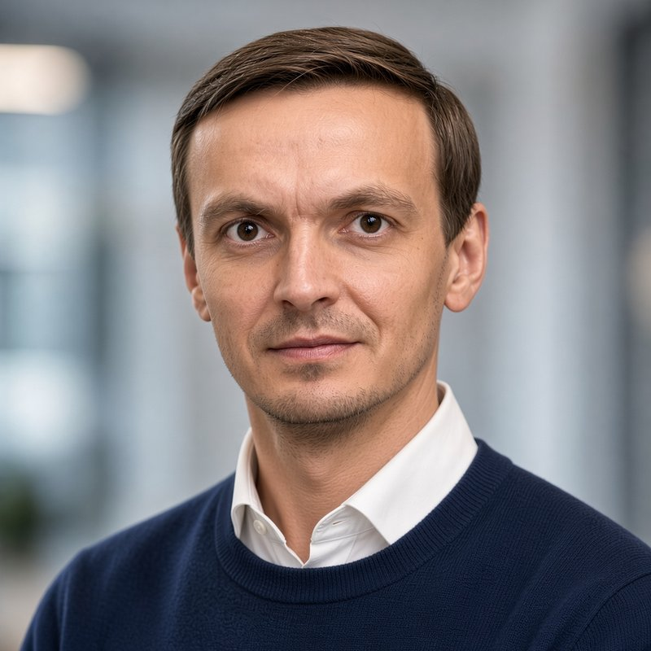

Константин Ушаков
Руководитель разработки на Битрикс24 · Алеан
Отвечаю за разработку корпоративных порталов Битрикс24: четыре команды, архитектура, процессы, интеграции. Выстроил в своей команде агентную разработку — ИИ-агенты пишут код, люди отвечают за результат.

Путь
2024 — сейчас
Руководитель разработки на Битрикс24 · Алеан
2023 — 2024
Консалтинг и разработка на Битрикс24 · независимые проекты
2021 — 2023
Технический руководитель проектов, руководитель уфимского офиса · ЦИТ «Факт»
2018 — 2021
Руководитель отдела разработки · «СНЕГ»
2017 — 2018
Ведущий разработчик, архитектор CRM · проекты для страхового брокера Сбербанка
2010 — 2017
Разработчик на 1С-Битрикс